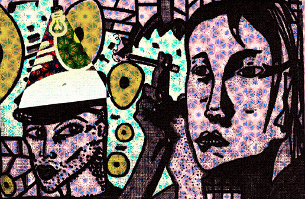

 |
AMISTAD Le
pegó una patada al bote caído de cerveza y este fue a parar
junto a la mano de Larry.Larry se rió y le tiró un cojín
con desgana pero bien centrado y Johnny, confiado, lo dejó caer
sobre su cabeza al tiempo que alcanzaba el mechero. Riéndose comenzó
a recitar una oda mientras aplicaba graciosamente una llama a una de las
puntas del cojín. En la pared, Larry pudo ver sin entender la sombra
del humo y en el sabor del gúiski creyó reconocer el aroma
del fuego junto a su nariz. Tuvo que soltar la copa y en el aire recoger
el regalito que el jocoso Johnny le enviaba entre carcajadas. Balbuceando
por la risa y la sorpresa se sentó con las piernas cruzadas y roció
de gúiski otros dos cojines y la lámpara apagada junto a
su brazo prendiéndoles fuego con el lanzallamas vietnamita del
hijito de Johnny que antes le había ganado jugando al póquer.
Aquel se parapetó tras la silla ante la llegada aérea de
las armas, pero torpemente, por lo que arrastró tras él
el teléfono y una mesita con dos pequeños cuencos de la
dinastía Carrington. Uno de los cojines comenzó a prender
en sus ropas, mas Johnny, entre risas imparables cogió la minicadena
y con un impulso musical la elevó encima de la cabeza de Larry.
Destrozado el cráneo por el sorpresivo golpe y haciendo gala de
un extraordinario sentido del humor Larry hizo trizas la botella de gúiski
contra el televisor y como una bola de béisbol la lanzó
divertidamente hacia su amigo. Johnny casi incinerado pero con una mueca
de placer en sus chamuscadas mejillas se cortó un dedo y colocándolo
en la anilla de la granada de la sobrinita de Larry la mandó, con
lágrimas incontenibles de risa |